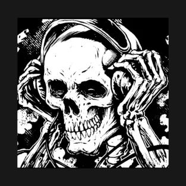

Music! :D

Before i share my actual music, it might be fair to show what and who inspired me to actually make my music
as you can probably tell, i've always been into the edgier type of music, most noteably nu-metal and metalcore
Bands like Attack Attack! and thirty seconds to mars (despite jared leto's INCREDIBLE fall off) made up a large majority of my childhood
this then lead me to listening more to the "heavier" things, like slipknot or gojira!
currently i listen to basically whoever i feel like,but deathcore has been my new resting place (big shoutout to chelsea grin)
The music i make!
When i was way too young, i started playing the piano. At the time i hated every single part of it, i wanted to quit and it sucked
but then i realized that i was pretty good at it, and could play whatever i really wanted to. this felt freeing, and for the first time. i LOVED playing the piano
from there, ive been playing and making music and having a blast every time i do. I picked up the drums and realized that i loved the process of learning and making my own thing the most
I have two main projects, a collaberative effort with some friends of mine. Sølstace (a mix of solace, and solstice).
wherein i embrace the music that shaped me, and indulge in the incredibly edgy... and incredibly cringe side of music.
ranging from some alt-rock instrumentals, metalcore emo bangers, and some deathcore sprinkled in there too.
My second project is more on the back burner. Moonlight at midnight. and its almost entirely solo, this is more of a chill and jazzy side of music.
i know not everyone enjoys the angry screaming of my taste, and so i wanted to make something far more accesible to the general masses.
the only EP released under this project is a high-octane, jazzy "casino-core" type thing. trying to replicate the feeling of the gamblers high, without the risk of losing all your money.
alongside this EP is a small smattering of lofi hip-hop. perfect to study/chill to 24/7.
I hope this either shows you the kind of person i am, and also inspires you to make your own music if you have that fire in you.
I dont intend on making this my career, and i dont even want to be famous or popular because of this. I make music for myself, as an outlet.
i have no drive to make money or monetize what i do. The love of my art is more than enough to make this all worth it to me.